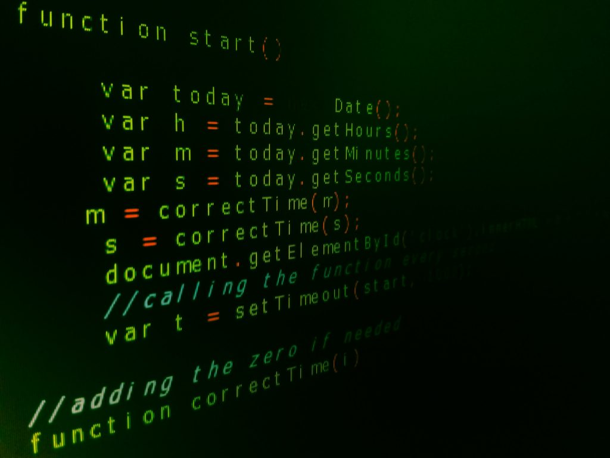

Comentaris Html
-Els comentaris en HTML son linies de text que s'afegeixen al codi per deixar notes o explicacions,pero que no son visibles per als usuaris finals de pagina web
-S'empra per ajudar els desenvolupadores a documentar el codi,descriure seccions especifiques o deixar indicacions per a futurs desenvolupadors
-Els comentaris no afecten el rendiment ni la visualitzacio de la pagina en el navegador
<!-- Aquesta secció és el capçal de la pagina -->
